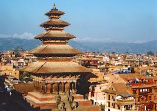
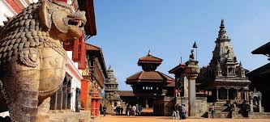

|  | Bhaktapur literally translates to Place of devotees. Also known as Bhadgaon or Khwopa (Newar: ???? Khwopa), it is an ancient Newar city in the east corner of the Kathmandu Valley, Nepal, about 8 miles (13 km) from the capital city, Kathmandu. |
| It is located in Bhaktapur District in the Bagmati Zone. Bhaktapur was the largest of the three Newar kingdoms of the Kathmandu Valley, and was the capital of Nepal during the great 'Malla Kingdom' until the second half of the 15th century. | |
|  |